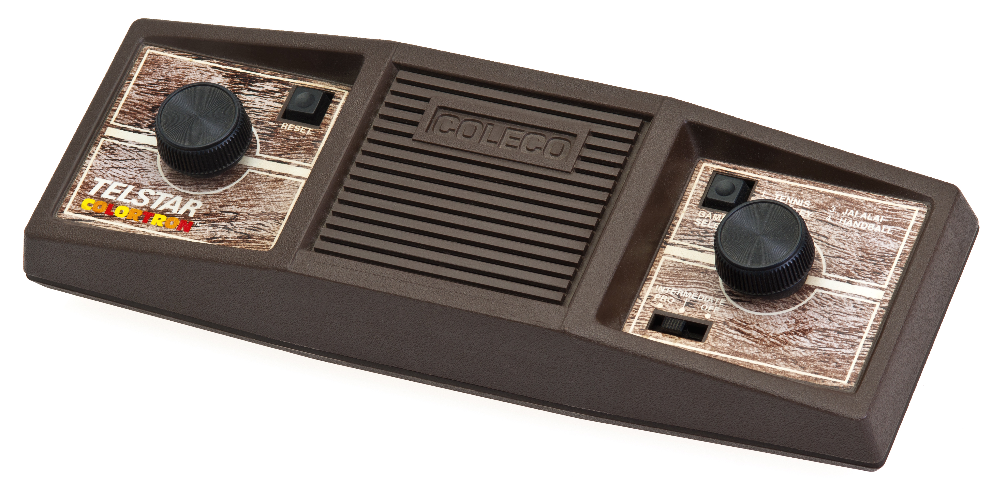
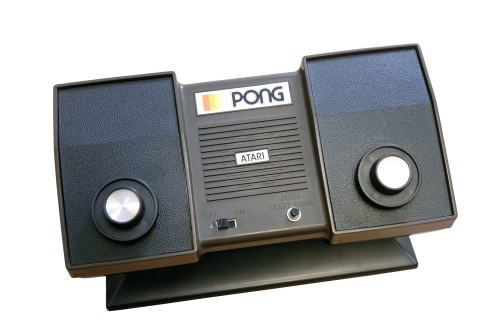
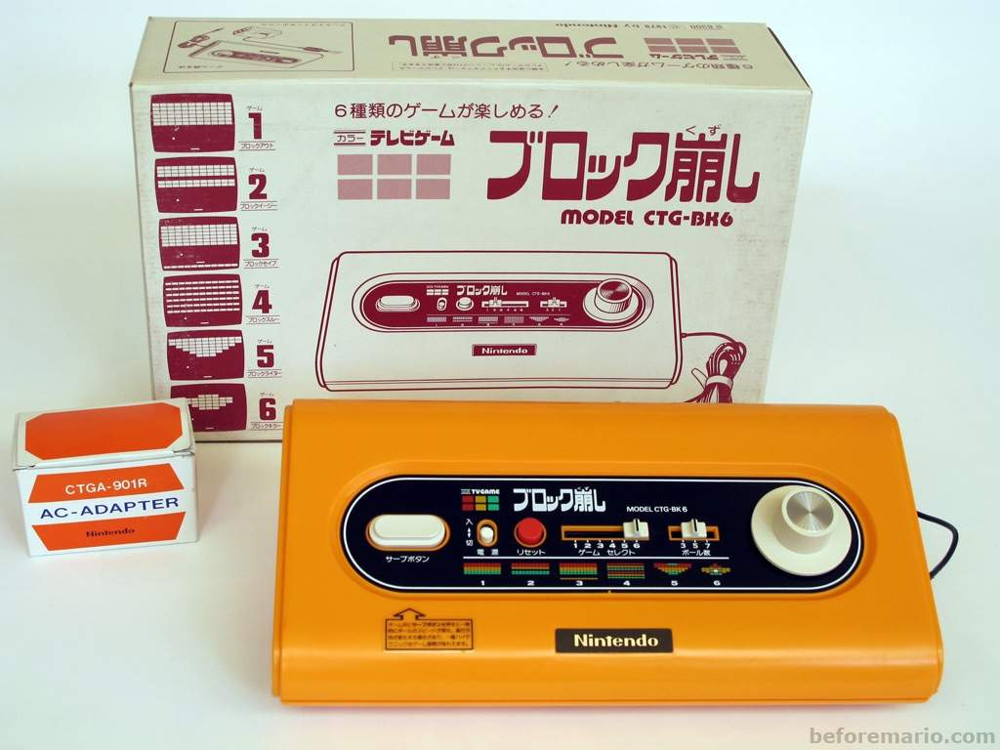

1970s-1980s


The firm Atari was formed in 1972. Not only did the business dominate the video game market for the following decade, but it also created Pong, the first global hit. Pong's gameplay is extremely identical to that of its predecessor, Tennis for Two from 1958. Pong, is a game that consists of two players or a single player against a computer, which simulates back and forth ping pong until one of the two players wins by a higher amount of points.

The Magnavox Odyssey, Telstar, Home Pong, and Color TV-Game were among the first generation of consoles available between 1972 and 1980.
FIRST-GENERATION CONSOLES

The first commercial home video gaming console was the Magnavox Odyssey. The hardware was created by a small team at Sanders Associates led by Ralph H. Baer, while Magnavox finished development and released it in September 1972 in the United States. The Odyssey is made up of two rectangular controllers connected by cables and a white, black, and brown box that connects to a television. It can show three square dots and one line of varied heights in monochromatic black and white on the screen, with the dots behaving differently depending on the game being played.

PONG RETURNS
From 1976 through 1978, Coleco created, distributed, and marketed the Coleco Telstar brand of specialized first-generation home video game systems. Beginning in 1976 with the Coleco Telstar Pong clone video game device based on the AY-3-8500 chip from General Instruments, there were 14 consoles released in the Coleco Telstar series.
Bushnell pushed his workers to invent additional items after the success of Pong. The large-scale integration (LSI) chip, a new electrical technology, had recently become available, and Bushnell felt it would "enable pioneering in new" gaming concepts. Pong was reduced from a huge arcade printed circuit board (PCB) to a little LSI chip for use in a home system when Atari started working on it.
MAGNAVOX SUES ATARI
Magnavox sued Atari, Allied Leisure, Bally Midway, and Chicago Dynamics in April 1974. Based on comprehensive records Ralph Baer kept of the Odyssey's design process dating back to 1966, Magnavox claimed that Atari had infringed on Sanders Associates' patents pertaining to the notion of electronic ping-pong. Witness depositions and a signed visitor book showed Bushnell had played the Odyssey's table tennis game before releasing Pong, among other documentation. In June 1976, Bushnell and Magnavox reached an out-of-court settlement.
NINTENDO’S FIRST COLOR TV-GAME
Nintendo's Color TV-Gaming was the company's first video game system. Between 1977 and 1980, the system was exclusively available in Japan as a series of five specialized home video game systems.
Next Level